For the professionals who have spent years working around their skin.
A cinematic brand story for SKINPLUSBYOROYO, told through the lives of the professionals you serve and the clients you've already helped. Filmed in your clinic at the end of November. Built for TV, paid social and every screen between.
01 · The insight
Your clients have been let down before.
They've spent money on creams, waxing and threading. Some tried laser elsewhere. They aren't shopping for a treatment. They want someone to trust.
They don't need another pitch. They need to be seen.
Moodboard frame · the hidden routine
02 · The idea
Show the moment someone feels understood.
Most aesthetics ads lead with results. We lead with the moment before: someone who has handled this in secret for years is finally seen.
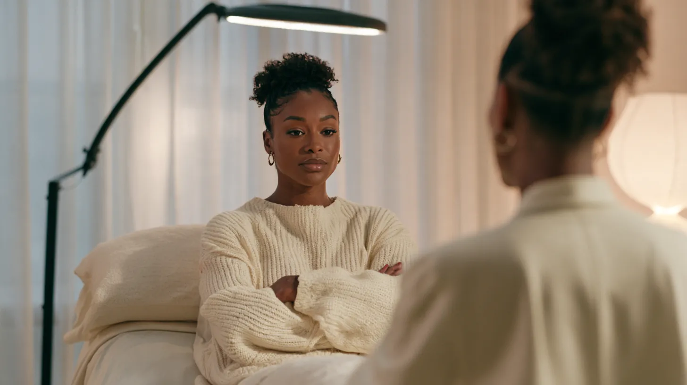
Moodboard frame · the moment before the unfold
The signature: the unfold.
Every film has one moment the guard comes down. Arms uncross. A hand leaves the chin. It mirrors the butterfly in your logo, and every spot ends on the same still: a prop butterfly resting on bare skin, with your mark.
BrandEvery skin has a voice.
CampaignYour Skin, Finally Seen.
Ad tagsSKIN + SURE · SKIN + SMOOTH · SKIN + SEEN
03 · Why SkinPlus
Being seen isn't a slogan here. It's how the work is done.
Three things set you apart. Every film proves one of them on camera.
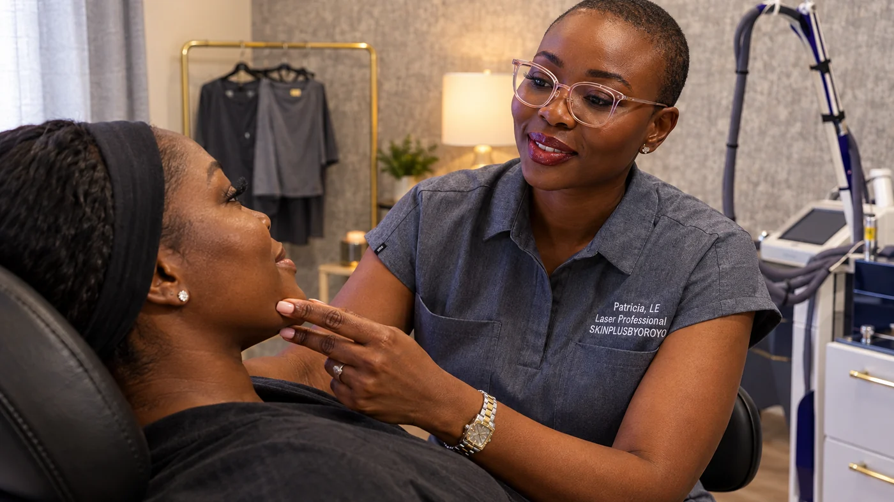
1
Same hands, start to finish.
The person who listens in your consultation is the person who performs your treatment. No hand-offs, no starting over with a stranger.
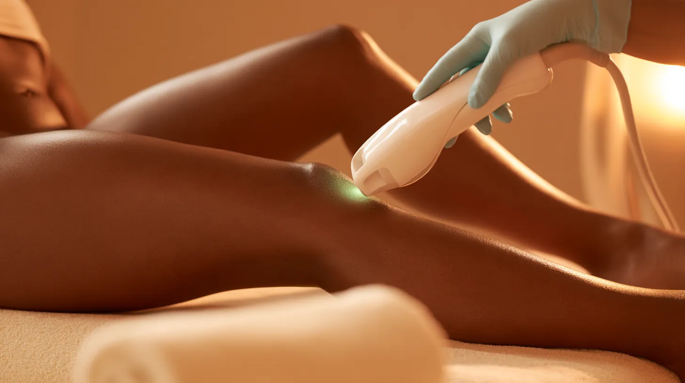
2
A laser chosen for skin of color.
The technology was selected for melanin-rich skin, so the treatment is built around your skin tone instead of adjusted to it.
3
Aftercare between every session.
Your own OROYO aftercare keeps skin calm and cared for between sessions. It appears in her evening routine, his morning routine, and in your hands at the end of every treatment, and each product gets its own :15 spot.
04 · Their life is the set
Attorneys, executives, clinicians.
The films live where they live: the courthouse steps, the board table, the hospital garage at dawn. Your clinic is where the hidden routine ends.
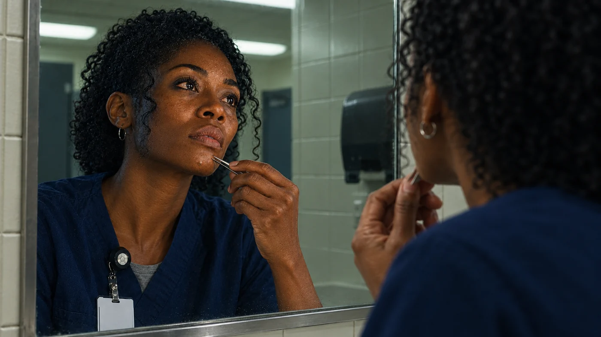
Moodboard frame
Persona one
The Practitioner
Who
Nurse practitioners and physicians.
Hidden routine
Tweezers in the visor before a twelve-hour shift.
In your chair, they hear
You don't have to manage this alone anymore.
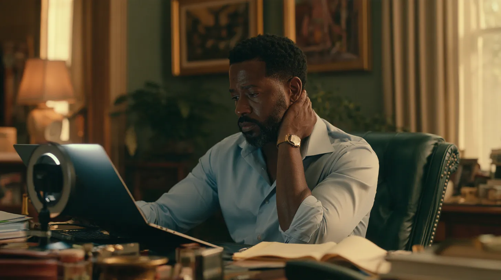
Moodboard frame
Persona two
The Executive
Who
Directors, consultants and founders who live on video calls.
Hidden routine
A close shave, the bumps after, the webcam angled up.
In your chair, they hear
It isn't how you shave. It's how your hair grows.
Moodboard frame
Persona three
The Attorney
Who
Attorneys and partners whose presence is part of the case. You practiced law before you practiced skin.
Hidden routine
A mirror check in the courthouse restroom before every hearing.
In your chair, they hear
Same hands, start to finish. Quick sessions, zero downtime.
05 · The messaging
Short enough to read between meetings.
Written like a note to someone with thirty seconds. One idea, their world first, then the proof.
The PractitionerTwelve-hour shift. No time for tweezers.
The ExecutiveCamera on. Mind on the meeting.
The AttorneyCourt at nine. No mirror check.
ProofSame hands, start to finish.
ProofQuick sessions. Zero downtime.
ProofA laser chosen for skin of color.
ProofAftercare between every session.
Sign-offYour Skin, Finally Seen. SKINPLUSBYOROYO, Little Elm.
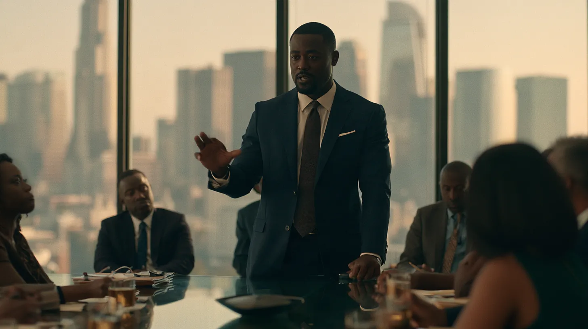
Moodboard frame · the payoff, in his world
One ideaEach ad says one thing.
Seven wordsOn-screen lines stay at seven words or fewer.
06 · The story
Four ingredients, one honest film.
Your clinic, your voice and your clients carry it. Actors only open the ads.
1Your why
You, in your clinic: the courtroom in Lagos, why you walked away from law, the years you lived with HS before laser gave you relief, and why melanin-rich skin became your life's work.
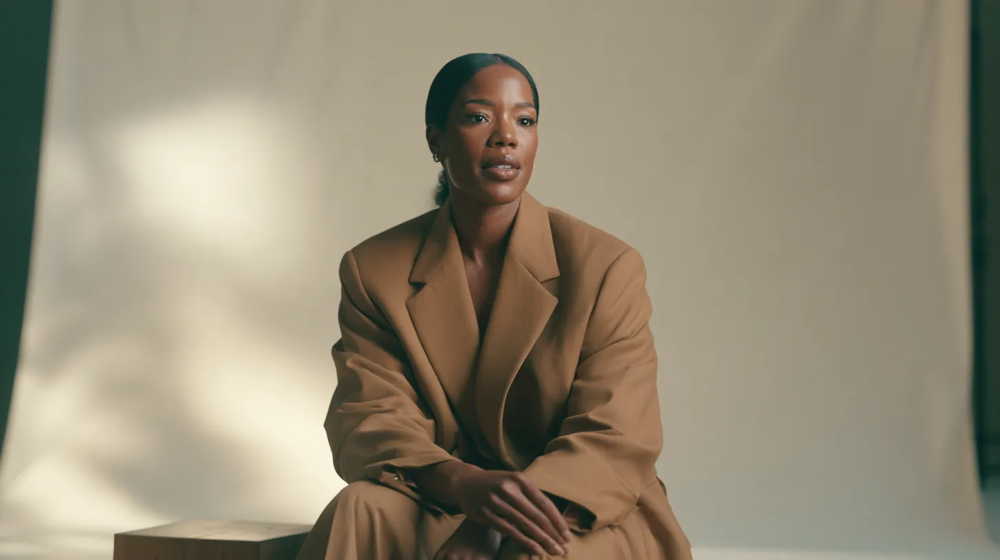
2Real clients, real words
Past clients, unscripted: the routine, the money spent, the moment they trusted you, and what changed.
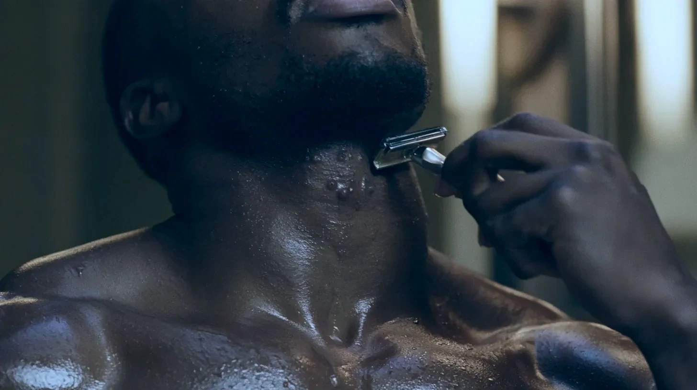
3The pain, dramatized
Short scripted scenes in their world: the visor mirror, the courthouse restroom, the webcam tilted up.
4The solution, in your clinic
The treatment film: one person from consult to laser to aftercare, and your two products in the routines they belong to.
The hero film, two minutes
Dramatized open
Your why
Client: the routine
Client: the money already spent
Same hands, start to finish
The unfold: what changed
"Every skin has a voice." The mark lands.
07 · How we film it
Three ways to shoot it.
Same story. Different set and cast.
AActors, dramatized
Best for
Stopping the scroll and carrying TV.
Feels like
A short film.
Consider
Casting, a location day, and a "dramatization" label in ads.
BReal clients, studio set
Best for
A polished testimonial series that looks the same every time.
Feels like
A magazine interview.
Consider
Clients travel to the set, and less of your space is on screen.
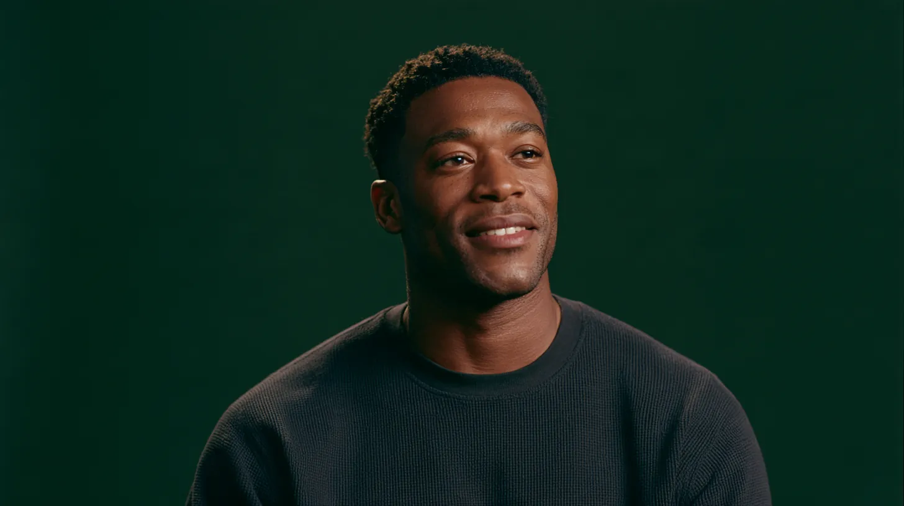
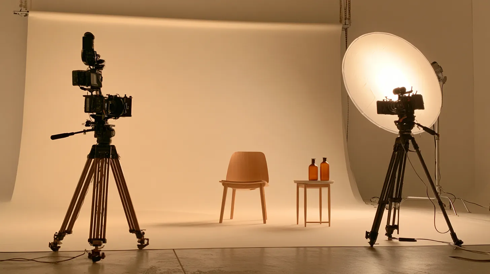
CReal clients, your clinic
Best for
Trust. Your real space is the proof.
Feels like
A documentary.
Consider
Scheduling around appointments and using the window light while it's best.
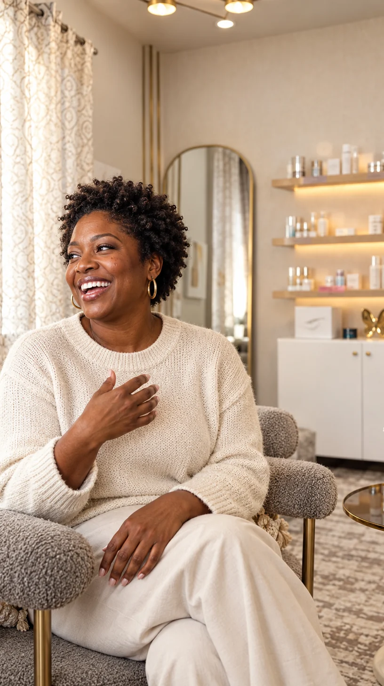
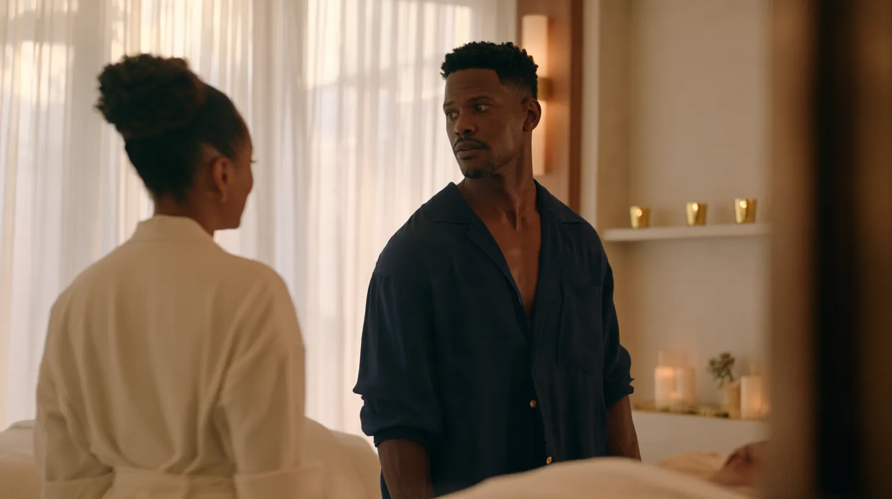
Moodboard frames. Your campaign is filmed with your clients, in your clinic.
Our recommendation
C for every testimonial and your why. A for the first seconds of ads and TV.
Your clinic is the most convincing set we could build, so the real stories live there. Short dramatized openings give paid ads and television their hook. B stays in reserve for any client who would rather film somewhere neutral.
08 · Visual language
Quiet, warm, true to skin.
LightSoft window light and a warm neutral grade. Real skin texture, never smoothed away.
CameraEvery talking head is shot like a film, not a selfie: two cameras (one mounted vertical), shallow depth of field, slow push-ins and cutaways. Handheld only for daily life.
ColorCream, caramel gold and forest green on set. Navy scrubs and light-blue shirts for the professionals.
TypeTenor Sans and Cormorant, your brand faces, on every title and caption.
SoundReal voices first, then room tone and a sparse piano and cello score. Nothing that sounds like stock music.
16:9 · TV and YouTube9:16 · Reels, Stories, TikTok
Every setup is framed for both. The key moments get their own vertical camera.
09 · The interviews
The questions are the script.
Testimonials aren't written. Elliott asks these on set and lets the answers lead.
Patricia
What do you do, in one sentence, for someone who has never heard of you?
Take me back to that courtroom in Lagos. What happened, and why did you walk away from law?
January 2019. What did you pack, and what did you come here to build?
You lived with HS for more than a decade. What did laser change for you? (Only if you're comfortable sharing.)
You told me about a nurse practitioner plucking her chin. Tell that story.
What happens to melanin-rich skin with the wrong laser, or years of plucking?
Walk me through someone's first time in your chair.
Why do you do every consultation and every treatment yourself?
Why this laser? Say it the way you'd say it to a client.
What happens between sessions, and why does aftercare matter so much on melanin-rich skin?
Tell me about your two aftercare products, and why you made your own.
What does it feel like when a client comes back after a few sessions?
Finish this: "Every skin has a voice, and…"
What do you have coming up?
Past clients
Walk me through a normal morning before you found SkinPlus.
Where were you the last time you plucked, or shaved and regretted it?
When did it bother you most: at work, on camera, with family?
Had you tried laser or other treatments before? What happened?
What had it cost you, in time, money or confidence?
What made you trust her?
What was it like having the same person from your consult through every treatment?
What was your aftercare like between sessions?
What did she say in that first consult that stuck with you?
What's different now? Tell me about one moment you noticed.
What would you say to someone still doing what you used to do?
No other provider is named on camera.
10 · Your series
Thirty Seconds.
One question your clients ask, answered by you in thirty seconds, then confirmed by a client who lived it. Cinematic, short, and made for people between meetings.
1The questionFive words on screen, in your type.
2Your answerYou, to camera, in your clinic.
3A client confirms itOne line from a real testimonial.
4The proof and the mark"Same hands, start to finish." Then your butterfly end card.
I tried laser before. Why didn't it work?
Will laser work on dark skin?
Why do you do every treatment yourself?
What is plucking doing to my chin?
Razor bumps: is it how I shave?
What does aftercare actually do?
How many sessions will I need?
Does it hurt?
Can I do laser in the summer?
How should I prepare for my appointment?
What happens at my first consult?
When should I also talk to my doctor?
Twelve to start, filmed across the studio day in two looks. Vertical first, wide for YouTube. Organic posts; paid versions skip session counts and timelines.
11 · What one shoot becomes
Seven pieces from one shoot.
1
Campaign spots
:15 · :30 · :60
The Practitioner, The Executive and The Attorney, each told at three lengths for TV, YouTube and paid social. The :60 intercuts all three in your voice.
2
Client stories
Under 2:00 each, plus :06 to :15 soundbites
Past clients in their own words, filmed in your clinic: the routine, the money already spent, the moment they trusted you, what changed.
3
Your founder's film
Under 2:00
So your audience knows exactly who they're trusting.
What
Laser and corrective skincare for melanin-rich skin, by the same hands from consult to aftercare.
When
A courtroom in Lagos. A decade living with HS. January 2019. SKINPLUSBYOROYO, then OROYO.
Why
Because every woman deserves to feel enough, and every skin deserves to be seen.
4
The treatment film
1:00 to 2:00, plus cutdowns
A real first visit, start to finish: the consult, the laser, the aftercare, all by you. Nobody walks in guessing.
5
Beauty editorial
:15 and :30 films, plus stills
Your two OROYO aftercare products, shot like a luxury campaign: texture, light and melanin-rich skin, in the ritual between sessions.
6
Thirty Seconds
Under :30, twelve to start
Your talking heads mixed with client soundbites, one question at a time.
7
The hero film
2:00
Your Skin, Finally Seen: every thread above, woven into one story for your website and YouTube.
Every piece comes wide 16:9 and vertical 9:16.
12 · The shoot
Four days, after Thanksgiving.
Thanksgiving is Thursday the 26th, so we’d film Monday through Thursday, November 30 to December 3, or December 7 to 10.
Day one · The photoshoot
Beauty editorial and your products, stills
MorningYour two aftercare products on stone in morning sun, then the top-down flat lay.
AfternoonBeauty portraits with your products, every shade together, and the butterfly still.
TestimonialsReal experiences from real past clients. If anyone receives a free or discounted session for appearing, the ad says so.
DramatizationsActors only play the scripted scenes, labeled as dramatizations where required, and never presented as clients.
Paid socialAd copy tells the characters' stories and never tells the viewer they have a condition. No side-by-side before-and-after in paid placements.
Results"Less" and "fewer," never "permanent" or a promised timeline.
TelevisionOn-screen sources for any statistic, broadcast loudness standards and title-safe graphics.
ReleasesWritten releases from everyone on camera, covering their face, their story and any treatment footage.